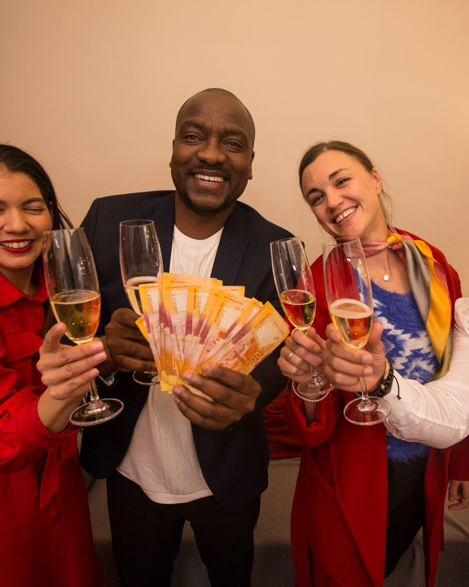
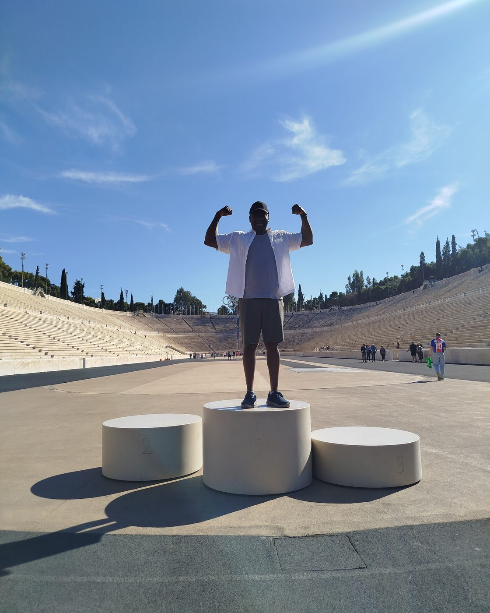

About Deji
Twenty years in customer experience and service leadership. The last ten in South African banking, insurance and home finance.
I am a customer experience executive based in Cape Town. I have spent 20 years in customer experience and service leadership. The last ten have been in South African banking, insurance and home finance, including Head of Customer Experience roles at both Absa and the ooba Home Loans group.
I believe in simplicity. If I cannot explain something to a seven-year-old, I do not understand it well enough myself. That belief shapes how I work. I strip away complexity: in processes, in communication, in how customers experience a product. Less process means fewer places for things to go wrong.
I work with people, not above them. I coach. I ask for multiple views before making decisions. I believe people are good and that they want to do better. I have never written anyone off, and I never will. Everyone has something to offer.
What I bring to marketing from my CX background is this: marketing attracts customers, but customer experience is what keeps them. If you truly understand what your customer needs, especially the needs they carry from outside your industry, you stay relevant. Most companies only look at what the customer wants inside their own walls. That is a mistake.
I am also passionate about helping people understand money. Good financial decisions start with clear information, and clear information starts with someone caring enough to make it simple.
I won Come Dine With Me South Africa. The baklava helped.
Season 8, Episode 8. Cooking, running and football are where the rest of me lives.



See the method behind the results
Every result on this site follows the same sequence: from what the business believes, to what the data shows, to what sticks.